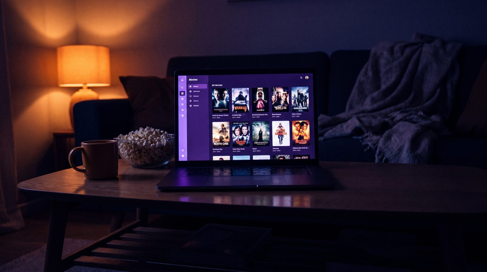
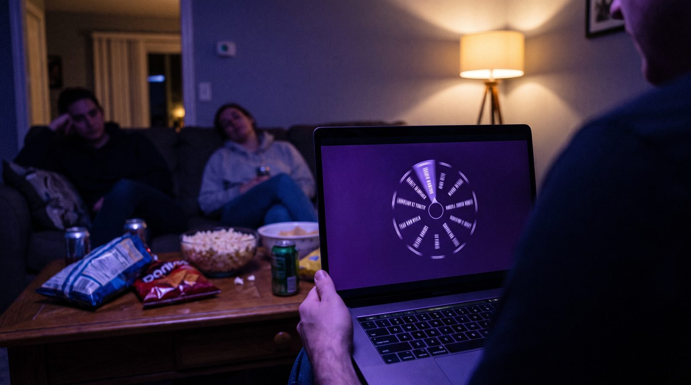

Каталог в двух режимах
Плитка с постерами или плотный список. Чипы-фильтры по спискам и жанрам, выдвижная карточка с описанием и метаданными.
CineVault собирает вашу библиотеку, списки и франшизы в одном тёмном зале — и превращает вечный вопрос «что смотрим?» в один поворот колеса. Всё живёт на вашем компьютере.
Восемь инструментов вместо одной бесконечной таблицы. Всё сделано под один сценарий — вечер, когда надо выбрать фильм и не поссориться.
Плитка с постерами или плотный список. Чипы-фильтры по спискам и жанрам, выдвижная карточка с описанием и метаданными.
Вложенные пользовательские списки, франшизы одним объектом и ручная очередь просмотра внутри каждого списка.
Не лотерея на один тык, а батл-рояль: участники вылетают круг за кругом, пока в хранилище не останется один фильм.
У каждого участника вечера есть право спасти свой фильм от вылета. Ровно столько раз, сколько вы договорились.
Шаг в половину звезды, дата просмотра и история завершённых сессий — чем закончился каждый вечер.
Жанры, страны, годы и часы у экрана. Картина того, что вы на самом деле смотрите, а не что собирались.
Один поиск заполняет название, год, длительность, страну, жанры, описание и постер. Постеры кэшируются и работают офлайн.
CSV, TSV и XLSX на входе, копия библиотеки на диск на выходе. Обратимое удаление — на случай неверного клика.
Обычный рандомайзер выдаёт ответ мгновенно — и его тут же хочется перекрутить. Колесо CineVault растягивает выбор в короткий ритуал: каждый круг убирает одного претендента, напряжение растёт, и финальный фильм ощущается решением, а не случайностью.
Не витрина и не постановочный рендер — обычный вечер, ноутбук на журнальном столике и договорённость, что решает колесо.


CineVault — не сервис с аккаунтом. Это приложение, которое открывается локально и хранит библиотеку у вас на диске.
Никакой синхронизации по умолчанию — вы сами решаете, когда сделать копию.
Портативная сборка распаковывается в папку и запускается двойным кликом — установщик и права администратора не требуются.
Если чего-то не хватает — остальное разложено по документации в репозитории.
Нет. CineVault запускается локально и не просит регистрацию. Библиотека принадлежит машине, на которой вы работаете.
Импортом CSV, TSV или XLSX. Формат колонок описан в документации: минимально нужны название и год, остальное CineVault дозаполнит из TMDB.
Нет, но с ним быстрее: один поиск заполняет год, длительность, страну, жанры, описание и постер. Токен создаётся в настройках аккаунта TMDB и хранится только у вас.
Сделайте резервную копию перед переносом — она выгружается одним файлом и так же одним файлом возвращается обратно.
Так и задумано. Для каждого списка задаётся квота участников, у каждого есть свои сейвы, а история сессий помнит, чем закончился вечер.
Текущая версия — 0.11.0-beta.1: основной цикл собран полностью, но статус пока бета. История изменений ведётся в репозитории.
Распакуйте папку, запустите двойным кликом и перенесите библиотеку. Дальше решает колесо.